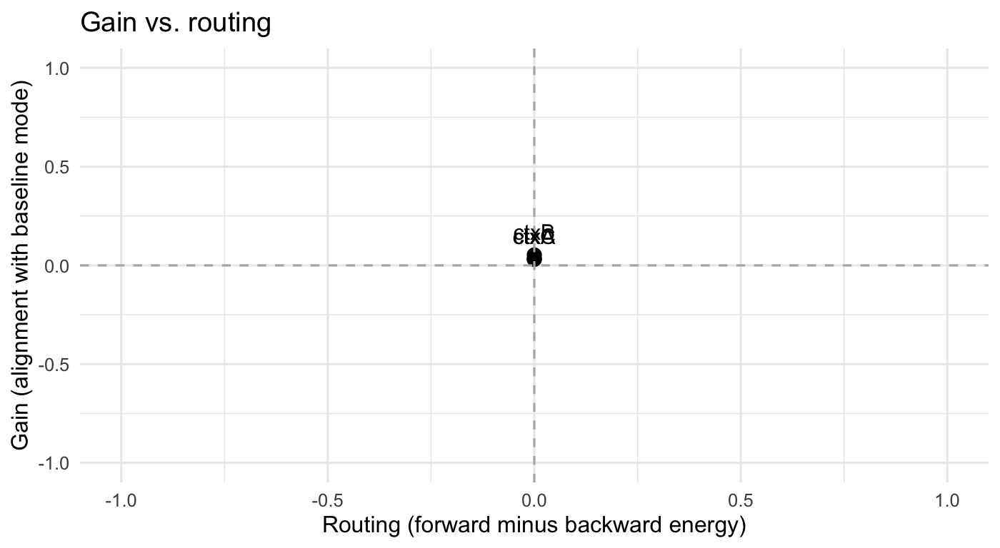
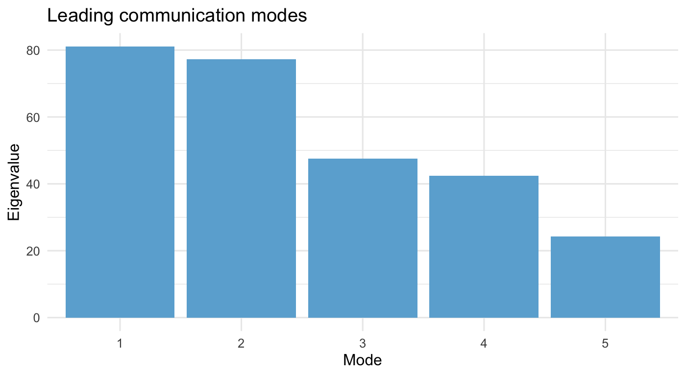

07_mechanistic_readouts.RmdMatrix-PPI provides multiple ways to summarize how an experimental context modulates network interactions. Beyond the raw interaction matrix , mechanistic readouts condense these effects into interpretable dimensions:
This vignette walks through these readouts on a small simulated rest-like data set so you can link the summary numbers to concrete changes in connectivity.
We simulate latent component activity with three contexts
(ctxA, ctxB, ctxC) that drive
distinct coupling templates. The observed data are low-rank projections
of these latent components with modest observation noise.
set.seed(2025)
sim <- mppi_sim_rest_dataset(T = 180, V = 25, r = 6,
contexts = c("ctxA", "ctxB", "ctxC"),
amp = c(0.45, 0.30, 0.20),
freq = c(0.015, 0.030, 0.045),
obs_noise = 0.05)
fit <- mppi_rest(sim$Y,
modulators = sim$modulators,
basis = list(type = "pca", r = 10L),
domain = "bold",
prewhiten = FALSE,
attach_pk = TRUE,
lags = -2:2)
fit
#> mppi_fit: 180 time points, 10 regions, 3 regressors
#> scale = normalized, backend = blas, packed = FALSE, basis=pca(r=10) (r=10), domain=bold
#> Frobenius energy per regressor:
#> ctxA: 86.5
#> ctxB: 160.4
#> ctxC: 101.9
#> Top eigenvalues (regressor 1): 5.00, 3.61, 2.25The rest wrapper stores the residual basis time-series
(fit$Z), the condition-specific interaction matrices
(fit$Delta), and various derived quantities that the
mechanistic helpers reuse.
mppi_axes() decomposes each interaction into a
gain component (alignment with the baseline covariance
eigenvector
)
and a routing component (difference between positive and
negative lag energies). High gain indicates a condition strengthens the
dominant connectivity pattern, while routing captures whether
information flow is biased toward leading or lagging the psychological
modulator.
axes_df <- mppi_axes(fit, lags = -2:2)
axes_df
#> condition gain routing scale
#> 1 ctxA 0.03049968 0 normalized
#> 2 ctxB 0.05308535 0 normalized
#> 3 ctxC 0.03258360 0 normalized
ggplot(axes_df, aes(routing, gain, label = condition)) +
geom_point(size = 3) +
geom_hline(yintercept = 0, colour = "grey70", linetype = "dashed") +
geom_vline(xintercept = 0, colour = "grey70", linetype = "dashed") +
geom_text(vjust = -1, size = 4) +
labs(title = "Gain vs. routing", x = "Routing (forward minus backward energy)",
y = "Gain (alignment with baseline mode)") +
coord_cartesian(xlim = c(-1, 1), ylim = c(-1, 1)) +
theme_minimal(base_size = 12)
In this simulation ctxA shows both high gain and
positive routing, reflecting strong amplification aligned with the
leading covariance mode and a preference for positive lags.
ctxC produces a mild, slightly negative routing effect.
For a closer look at routing, use mppi_lagged() to
inspect energy per lag. The function returns lagged interaction matrices
and aggregate positive/negative energies.
lag_ctxA <- mppi_lagged(fit, "ctxA", lags = -2:2)
lag_ctxA$R
#> [1] 0
lag_df <- data.frame(lag = as.integer(names(lag_ctxA$M_lag)),
energy = vapply(lag_ctxA$M_lag, function(M) sqrt(sum(M^2, na.rm = TRUE)), 0))
lag_df
#> lag energy
#> -2 -2 5.565172
#> -1 -1 5.563461
#> 0 0 14.083952
#> 1 1 5.563461
#> 2 2 5.565172In this example, lag dominates, which explains the positive routing value seen earlier.
mppi_modes() aggregates all condition matrices to
extract a low-dimensional communication subspace. Eigenvalues indicate
how much interaction energy each mode carries.
modes_out <- mppi_modes(fit, r = 5)
mode_df <- data.frame(mode = factor(seq_along(modes_out$values)),
value = modes_out$values)
mode_df
#> mode value
#> 1 1 81.04832
#> 2 2 77.24622
#> 3 3 47.51983
#> 4 4 42.45253
#> 5 5 24.23718
ggplot(mode_df, aes(mode, value)) +
geom_col(fill = "#6BAED6") +
labs(title = "Leading communication modes",
x = "Mode", y = "Eigenvalue") +
theme_minimal(base_size = 12)
Mode 1 captures most of the interaction energy. Projecting each
condition onto this shared basis (modes_out$projected)
reveals whether contexts modulate similar or complementary
subspaces.
Precision gating translates into precision-domain perturbations to highlight direct connections. Large off-diagonal ratios indicate focused coupling changes rather than changes in marginal variance.
prec <- mppi_precision_gate(fit, mode = "normalized")
prec$summary
#> condition dtheta_energy offdiag_ratio
#> 1 ctxA 210709.9 96.43348
#> 2 ctxB 180500.3 75.54629
#> 3 ctxC 372074.6 48.28392Here ctxA produces the strongest precision perturbation,
consistent with its high gain. Because the simulator injects symmetric
templates, the off-diagonal ratios are close to 1.
For a compact summary, mppi_mechanism_report() collates
gain, routing, lagged energy, precision gating, and optional
hierarchy/template projections.
report <- mppi_mechanism_report(fit, k = "ctxA", lag_fits = list(pos = lag_ctxA))
report
#> $gain
#> $gain$gain_component
#> [1] 4.3138280 4.2916300 -0.8866793 -3.4244968 -1.5383351 -2.4405061
#> [7] 144.3441272 144.2979908 190.1430344 155.9111897
#>
#> $gain$space
#> [1] "basis"
#>
#>
#> $routing
#> NULL
#>
#> $templates
#> NULLThe report shows that ctxA amplifies the baseline
pattern (gain > 0), is routing-forward (positive routing and lag
energy skew), and generates a sizable precision perturbation.
mppi_classify() for automated gain vs routing
categorization when you have many regressors.mppi_axes() outputs across subjects and embed
them in second-level models to test mechanistic hypotheses.Mechanistic readouts make it easier to communicate how connectivity changes in response to psychological contexts. Their tight coupling to the closed-form estimator keeps them fast and reproducible.